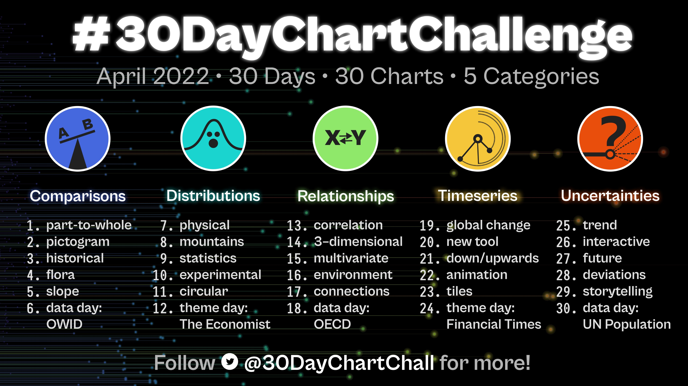

30DCC (2022)
Overview
This is my first year participating in the 30-day chart challenge. In my work with PsyTeachR, we do almost everything in bookdown, so I thought I’d make a book with our open-source PsyTeachR template. That was started here, but this version of the book uses quarto, an open-source scientific and technical publishing system built on Pandoc.

I’m going to use data simulation for many of my charts, so this will also end up being a resource for how to simulate different types of data.
Part To WholePictogramHistoricalFloraSlopeOwidPhysicalMountainsStatisticsExperimentalCircularEconomistCorrelation3 DimensionalMultivariateEnvironmentConnectionsOecdGlobal ChangeNew ToolDown UpwardsAnimationTilesFinancial TimesTrendInteractiveFutureDeviationsStorytellingUn Population